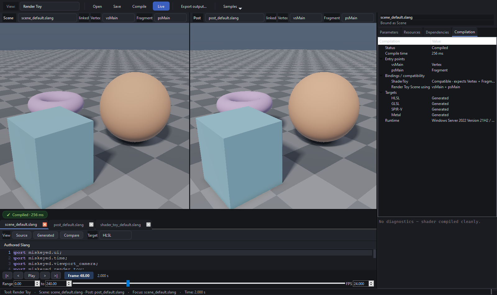

Entry points are program capabilities¶
A ShaderDocument represents a program, not a fixed vertex/fragment pair. Its
reflected CompiledEntryPoint records can contain vertex, fragment, and compute
stages, including multiple entries of one stage:
vertexMain Vertex
sceneMain Fragment
debugMain Fragment
inferMain Compute
document provides entry points
-> session chooses capabilities required for its pass
-> renderer executes those selected entries
Render Toy stores selected Scene and Post vertex/fragment names. Shader Toy stores
its own pair. Two consumers can choose different entries without copying or
recompiling the document. vsMain and psMain are fallback conventions, not
architecture.
Authored names identify user-facing capabilities. A backend executable name may differ: the SPIR-V package uses its exported executable name while reflection and session binding preserve the authored identity. Likewise, the active QRhi runtime backend and the Generated viewer target are independent.
See CompiledEntryPoint in SlangCompiler.h and selection in
RenderToySession / ShaderToySession.
